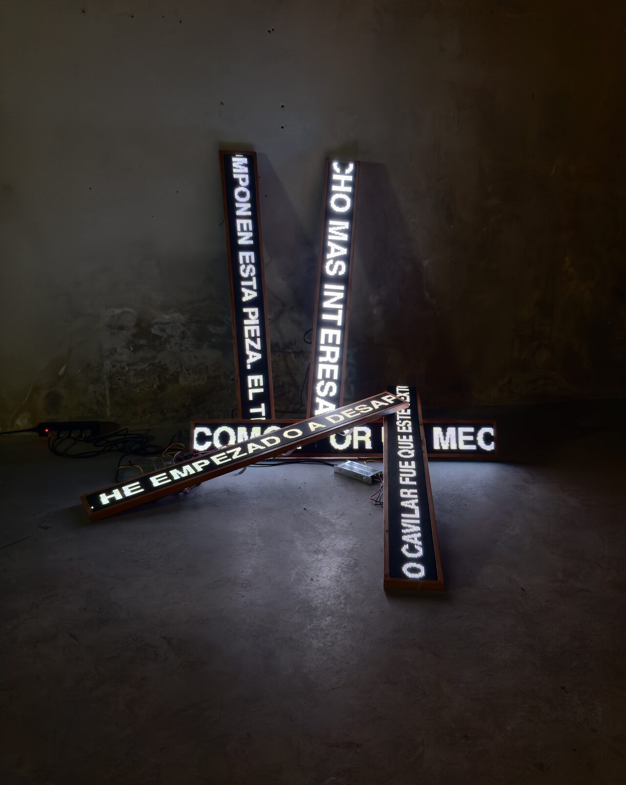

2026
Installation
Five LED panels, programmed moving text in Spanish
LA SINTITULA sets a text in motion across five LED panels. Words appear, travel and disappear before they can be held, so that reading becomes a matter of timing, position and light.
The text reflects on its own conditions of presentation and enunciation, and on its spatial circumstance.
First shown in Poemas androides, Nadie Nunca Nada No, Madrid (2026).
Special thanks to Hsien-Yu Cheng